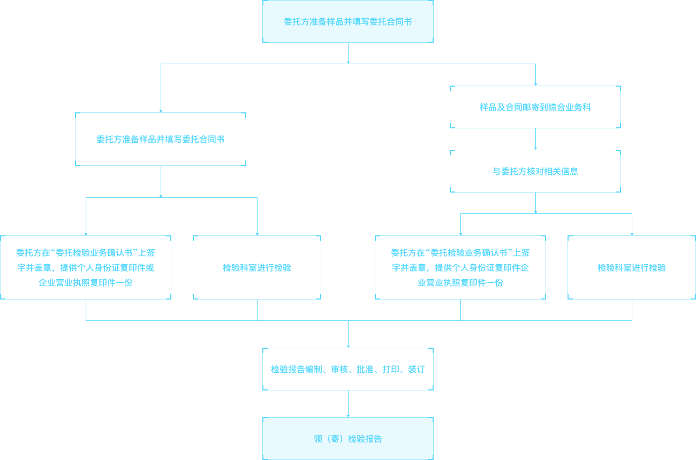

婴幼儿及儿童纺织产品、中小学校服、机织儿童服装、冲锋衣、衬衫、西服大衣、西裤、单夹服装、连衣裙裙套、儿童服装、茄克衫、风衣、牛仔服装、棉服装、羽绒服装、睡衣套、丝绸服装、针织拼接服装、棉针织内衣、化纤针织内衣、针织T恤衫、针织运动服、针织休闲服装、针织裙套、毛针织品、低含毛混纺及毛针织品、羊绒针织品、亚麻针织品、桑蚕丝针织服装、针织保暖内衣、文胸、针织帽等。
被、被套、床单、枕、垫类产品、蚕丝被、梳棉胎、被胎、绗缝制品、毛毯等。
丝绸围巾、领带、围巾披肩、缝制帽、袜子、毛巾等
棉、麻、丝、毛、化纤纤维等。
各类纱及纱线。
各类纺织服装面料。
| 类别 | 检测项目 |
|---|---|
| 棉 | HVI棉纤维物理性能全项、颜色级、纤维长度、回潮率、含杂率、断裂比强度、成熟系数、线密度、马克隆值、疵点、轧工质量、含糖率、异性纤维等 |
| 毛 | 油、灰、含杂率、含碱量、碱中溶解度、纤维直径、纤维类型含量、回潮率等 |
| 麻 | 支数、白度、断裂强度、长度、化学成分、柔软度、回潮率、含杂率等 |
| 化学纤维 | 线密度、长度、断裂强力及断裂伸长率、卷曲性能、疵点、含油率、比电阻、干热收缩率、回潮率、长丝捻度等。 |
| 梳棉胎 | 棉胎级别（颜色级、含杂率、马克隆值）、短纤维含量、原料要求、网纱、研磨率、重量偏差率、尺寸偏差率、铺棉、包边、使用说明 |
| 纱、纱线类 | 条干CV、纱疵、捻度、捻度变异系数、单纱线断裂强度、单纱线断裂强力变异系数、百米重量偏差、百米重量变异系数、一克内棉结粒数、一克内棉结杂质粒数、线密度 |
| 羽绒服装 | 羽绒种类、含绒量、充绒量、蓬松度、绒子含量、耗氧量、气味等级、防钻绒性、水分率、浊度、酸度、残脂率等 |
| 服装及纤维制品类 | 禁用偶氮染料、甲醛含量、pH值、异味、耐水色牢度、耐汗渍色牢度、耐摩擦色牢度、耐唾液色牢度、绳带、总铅和总镉、邻苯二甲酸酯、外观质量、标识、纤维含量、耐皂洗色牢度、耐光色牢度、耐光、汗复合色牢度、耐干洗色牢度、断裂强力、撕破强力、胀破强力、剥离强力、裤后裆接缝强力、纰裂程度、接缝处纱线滑移、单位面积质量、织物密度、织物组织、拆下纱线线密度、尺寸变化率、起毛起球、压缩回弹性、带电电荷量、沾水性、静水压等 |